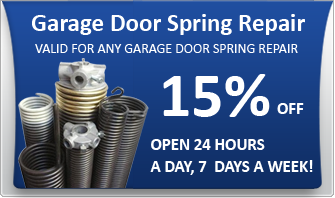
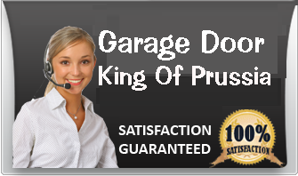
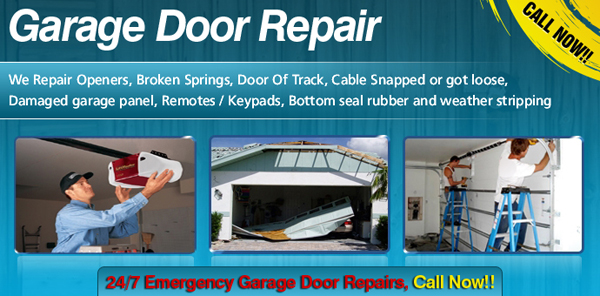

610-589-0067
Garage Door King Of Prussia
We offer Fast Reliable
- 24 hour garage door repair.
- Garage door opener and gates
- Repair Springs, cable and rails
- Residential & Commercial Garage door
Call today for a free estimate
610-589-0067
OUR SERVICES
- Garage Door Repair
- Commercial Garage Door
- Residential Garage Door
- Garage Door Spring Repair
- Garage Door Installation
- 
- 
Garage Door King Of Prussia
King Of Prussia PA Overhead Garage Doors is jersey Premier Garage Door Company. We offer the full range of garage door services. Whether you need new garage door installation , automatic garage door service or repairs, low cost steel and aluminum doors, custom and odd sizes wooden doors , built from scratch masterpieces, paint grade and stain grade wooden sectional doors, contemporary aluminum and glass, metal clad (stainless, zinc, copper, aluminum etc.) we are the right company to call.
King Of Prussia Garage Door.Garage doors are not just an ordinary door you seen to almost entrance gates of big houses and mansion.
King Of Prussia garage door
install, repair service for your garage door and
garage door openers.This by-product of inventions serves as the great shield of their house against bad intruders and other elements like strong winds, blizzard and etc. It is not only
compatible with residential functions; it can also be for commercial purposes and other establishments that barely need security all the time.Nevertheless, garage area is not only applicable for your car but it can be also your storage
area for other car related belongings you have that cannot be stored inside your home.. If you own a vehicle that serves as your no.1 mode of transportation, then, it will be an advantageous thing for you to have your own garage area as
this will serve as your car’s shelter.
If you have concerns regarding your garage door whether you want is repair, maintenance and etc. We are offering high-caliber services that can make all necessary improvements and changes upon
the issues of your garage door. Remember that we are not just a company that conducting repair services but also we are your one stop shop garage door service provider that has the capacity to eliminate all of your worries and issues with
your garage door.
If it is your first time to have garage door in your home, then King Of Prussia Garage Doors has the potential to offer you great choices to select the best door for you. Our doors vary from different colors, materials use
and feature in order to complement with the type of house you have. It is recommended to picture out the garage door you want before purchasing your own. Our doors are completely high in quality and considered as world class. We are getting
the materials to design and construct our doors from reputable manufacturers only to ensure that we are giving the best sorts of doors directly to our clients.
Garage door springs replacements
In King Of Prussia PA garage doors services we provide immediately respond for springs repairs. All of our services Vehicles are equipped with most of the standard size torsion and extensions
sprigs, Even In Case of a custom size spring we still be able to provide same day service for residential & commercial
Read More
King Of Prussia garage doors openers
King Of Prussia Garage Doors Providers of garage doors, garage door openers, installation, parts and service to customers in King Of Prussia area. We work with all the brands like liftmaster,genie,star, and
more… .
King Of Prussia Single Panel Garage Doors
King Of Prussia Single Panel garage doors are the simplest garage door and loved by most of our clients because of its capacity to be operated without any complications and complex use. It can be install in just a few span of hours
and when compared to other doors, these doors are more substantial and yet applicable for those people who want to try something new in their lives.
King Of Prussia Up-over Garage Doors
King Of Prussia Up-over garage doors are the last set of garage door we are offering. What keeps this door amazing and extraordinaire among other types is that it doesn't require costly maintenance once mounted and installed upon
your garage entry way. In this way, you will be able to save more money and avoid big expenses

We have a remarkable history of garage door services that is definitely
talked about and we believe our five star rating comes from our efficient and world class commercial and residential garage doors as well as services such as repair, replacement and installation of various garage doors parts from door
openers, cables, torsions, and springs. King Of Prussia Garage Door houses different models and styles of garage doors that you really would love to have. When you see our display, you will be mesmerized at the exquisite designs that separate
us from other garage door companies here in King Of Prussia